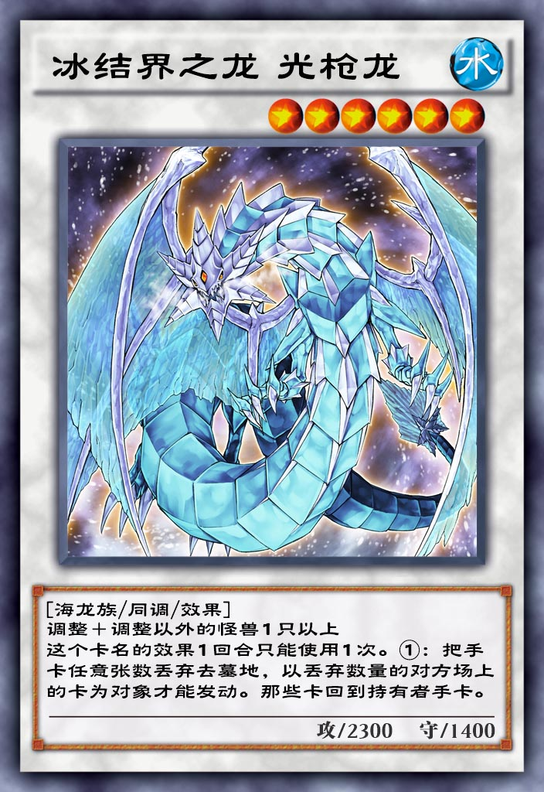

| 中文名 | 冰结界之龙 光枪龙 |  |
| 日文名 | 氷結界の龍 ブリューナク | |
| 英文名 | Brionac, Dragon of the Ice Barrier | |
| 卡片种类 | 怪兽 效果 同调 | |
| 数据库编号 | 7548 | |
| 使用限制 | 无限制 | |
| 种族 | 海龙 | |
| 属性 | 水 | |
| 星级 | 6 | |
| 攻击力 | 2300 | |
| 防御力 | 1400 | |
| 罕见度 | 超凡 | |
| 获取方式 | 无限业火 | |
| 字段 | ||
冰结界 |
||
| 链接 | ||
百鸽 Yu-Gi-Oh! Wikia |
||
| 效果 | ||
调整＋调整以外的怪兽1只以上 这个卡名的效果1回合只能使用1次。 ①：把手卡任意数量丢弃去墓地，以丢弃数量的对方场上的卡为对象才能发动。那些卡回到持有者手卡。 |
||
| 调整 | ||
[冰结界之龙 光枪龙] <氷結界の龍 ブリューナク> [09/04/19] ◆把自己手卡任意数量丢弃去墓地发动。那之后，场上存在的送去墓地数量的卡回到持有者手卡。 ◇起动效果。 ◇舍弃手卡去墓地是COST。 ◇取对象效果。 ◇可以选择TOKEN作为回到手卡的对象。 ◇这张卡的效果，在同一回合中可以复数次发动。 ◇效果处理时这张卡不在场上表侧表示存在的场合，效果有效。 |
||
| 笔记 | ||
●可以配合[海皇的重装兵], [水精鳞] ●非常适合[永火]卡组 ●可以配合[退缩回路], 来除外对方场上的卡 ●可以让自己场上的卡回到手卡。 1. 可以让场地, 永续魔法回到手卡来再次发动效果, 如[吸血鬼帝国], [增草剂] 2. 可以让不绑定怪兽的复活类陷阱卡回到手牌来再次发动效果, 如[活死人的呼声] ●鲁格（Lugh） 1. 凯尔特神话中的太阳神。鲁格为司掌光明的神，于传说古代爱尔兰地区的一位至高王。 2. 鲁格之枪并没有名字, 布里欧纳克（brionac），这个名字实际上是由日本游戏设计师健部伸明在1990年创造的。 |
||